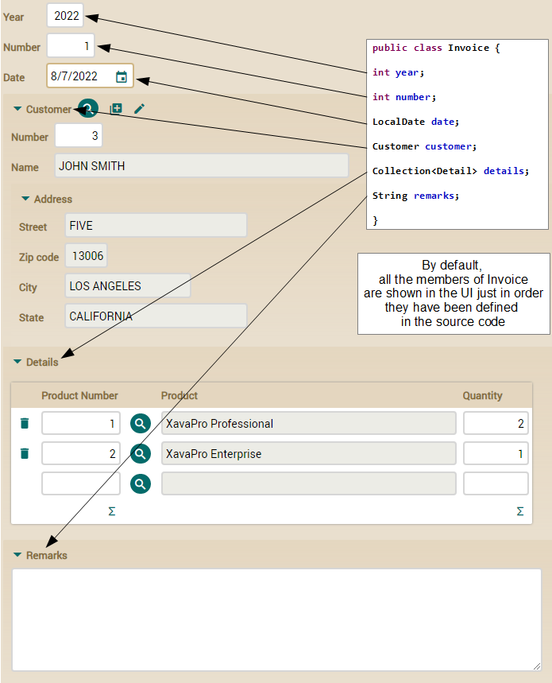
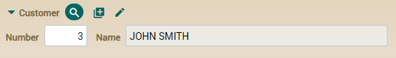
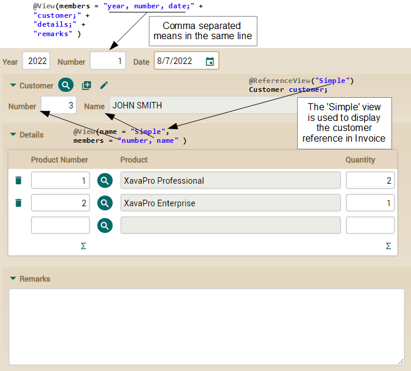

openxava / documentación / Lección 4: Refinar la interfaz de usuario
Curso:
1. Primeros pasos |
2. Modelo básico del dominio (1) |
3. Modelo básico del dominio (2) |
4. Refinar la interfaz de usuario |
5. Desarrollo ágil |
6. Herencia de superclases mapedas |
7. Herencia de entidades |
8. Herencia de vistas |
9. Propiedades Java |
10. Propiedades calculadas |
11. @DefaultValueCalculator en colecciones |
12. @Calculation y totales de colección |
13. @DefaultValueCalculator desde archivo |
14. Evolución del esquema manual |
15. Cálculo de valor por defecto multiusuario |
16. Sincronizar propiedades persistentes y calculadas |
17. Lógica desde la base de datos |
18. Validando con @EntityValidator |
19. Alternativas de validación |
20. Validación al borrar |
21. Anotación Bean Validation propia |
22. Llamada REST desde una validación |
23. Atributos en anotaciones |
24. Refinar el comportamiento predefinido |
25. Comportamiento y lógica de negocio |
26. Referencias y colecciones |
A. Arquitectura y filosofía |
B. Java Persistence API |
C. Anotaciones |
D. Pruebas automáticas
La interfaz de usuario para tu aplicación de facturación escribiendo simplemente clases de Java simples y llanas es bastante decente, de todas formas, con solo unas pocas anotaciones en tus clases puedes personalizar tu interfaz de usuario para hacer frente a cualquier caso que te encuentres en una aplicación de gestión.
En esta lección vamos a hacer que nuestra aplicación se vea mejor con una pequeña cantidad de código.
Interfaz de usuario por defecto
Así es la interfaz de usuario por defecto para
Invoice:

Como ves, OpenXava muestra todos los miembros, uno debajo de otro, en el orden en que los has declarado en el código fuente. También ves como en el caso de la referencia
customer se usa la vista por defecto de
Customer.
Vamos a hacer algunas pequeñas mejoras. Primero, definiremos la disposición de los miembros explícitamente, de esta forma podemos poner
year,
number y
date en la misma línea. Segundo, vamos a usar una vista más simple para
Customer. El usuario no necesita ver todos los datos del cliente cuando está introduciendo la factura.
Usar @View para definir la disposición
Para definir la disposición de los miembros de
Invoice en la interfaz de usuario has de usar la anotación
@View. Es fácil, sólo has de enumerar los miembros a mostrar. Mira el código:
@View(members= // Esta vista no tiene nombre, por tanto será la vista usada por defecto
"year, number, date;" + // Separados por coma significa en la misma línea
"customer;" + // Punto y coma significa nueva línea
"details;" +
"remarks"
)
public class Invoice {
Mostramos todos los miembros de
Invoice, pero usamos comas para separar
year,
number y
date, así son mostrados en la misma línea, produciendo una interfaz de usuario más compacta, como esta:
Usar @ReferenceView para refinar la interfaz de referencias
Todavía necesitas refinar la forma en que la referencia
customer se visualiza, porque visualiza todos los miembros de
Customer, y para introducir los datos de una
Invoice una vista más simple del cliente puede ser mejor. Para hacer esto, has de definir una vista
Simple en
Customer, y entonces indicar en
Invoice que quieres usar esa vista
Simple de
Customer para visualizarlo.
Primero definamos la vista
Simple en
Customer:
@View(name="Simple", // Esta vista solo se usará cuando se especifique “Simple”
members="number, name" // Muestra únicamente number y name en la misma línea
)
public class Customer {
Cuando una vista tiene un nombre, como en este caso, esa vista solo se usa cuando ese nombre se especifica. Es decir, aunque Customer solo tiene esta anotación @View, cuando tratas de visualizar un Customer no usará esta vista Simple, sino la generada por defecto. Si defines una @View sin nombre, esa vista será la vista por defecto, aunque este no es el caso.
Ahora has de indicar que la referencia a Customer desde Invoice use esta vista Simple. Esto se hace mediante @ReferenceView. Edita la referencia customer en la clase Invoice de esta forma:
@ManyToOne(fetch=FetchType.LAZY, optional=false)
@ReferenceView("Simple") // La vista llamada 'Simple' se usará para visualizar esta referencia
Customer customer;
Realmente sencillo, solo has de indicar el nombre de la vista de la entidad referenciada que quieres usar.
Después de esto la referencia
customer se mostrará de una forma más compacta:

Hemos refinado un poco la interfaz de
Invoice.
La interfaz de usuario refinada
Este es el resultado de nuestros refinamientos en la interfaz de usuario de
Invoice:

Has visto lo fácil que es usar
@View y
@ReferenceView para obtener una interfaz de usuario más compacta para
Invoice.
Ahora tienes una interfaz de usuario suficientemente buena para empezar a trabajar, y realmente hemos hecho poco trabajo para conseguirlo.
Resumen
En esta lección has aprendido como refinar la interfaz de usuario por defecto usando algunas anotaciones de OpenXava. Si quieres conocer todas las posibilidades que ofrece OpenXava para definir la interfaz de usuario
lee la guía de referencia.